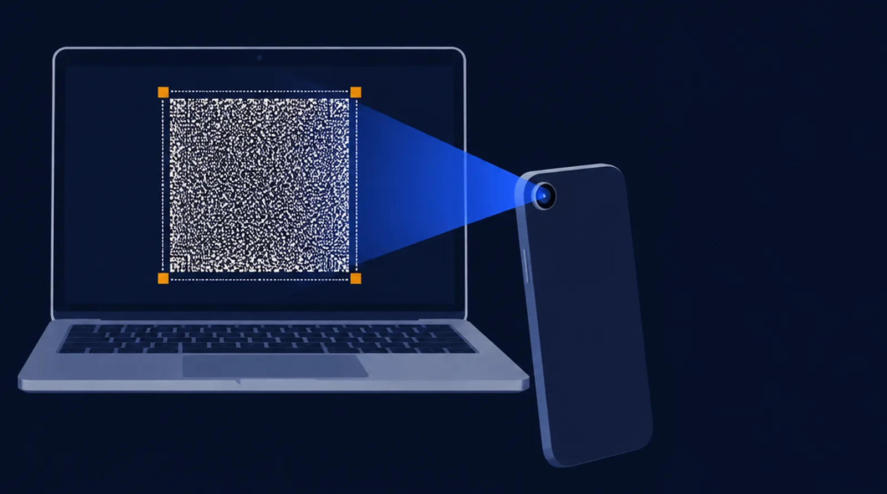

Send files to a phone camera.
This screen shows your files as moving tiles; the phone reads them and checks every byte. No cable, no network, no account. Nothing leaves this computer.

Files
No files yetLet go to add themDrop files here, or choose them. Any type; several files go as one transfer.
Advanced
From the phone's calibration result. Overrides the speed above.
Screen …; draws at ….
Device pixels per tile pixel. Auto draws the tile larger on dense screens (Retina, 4K laptops) so the phone can focus on it.
Tab
When the phone shows words, type them here or on the sending screen and press Enter: only the parts still missing are sent. Tab completes a word.
Send
You get 5 seconds to aim the phone before data starts.
While it sends, the tile flashes rapidly (30 times a second): if flashing light affects you, look away from this screen.
On the phone, open the LensBolt app or lensbolt.com/receive and point it at this screen. The receive page works offline once loaded.
Another computer can receive too: its receive page reads this screen with a Webcam, or with Share a window when this sender runs in a VM or remote desktop on it.
LensBolt is free and works offline. If it helped, Buy me a coffee · GitHub Sponsors.